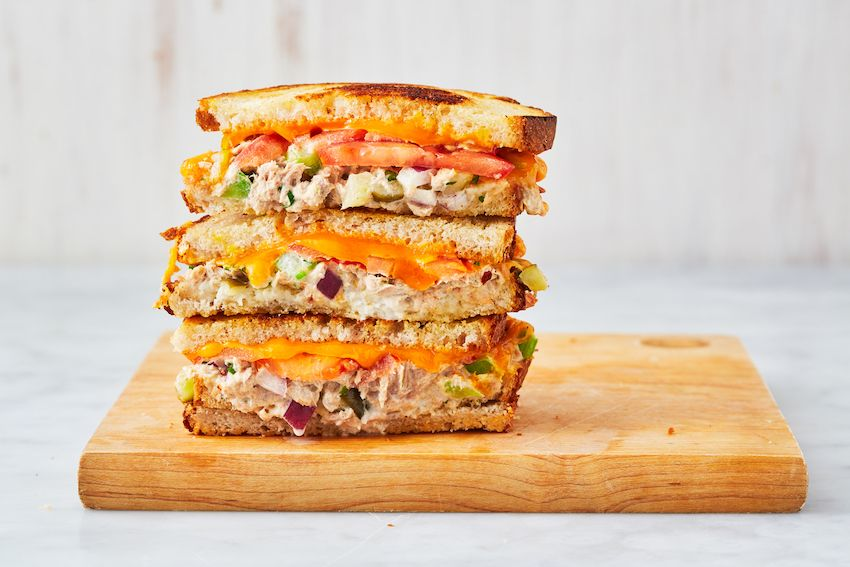

TUNA MELT

Description
A melt sandwich is a type of hot sandwich containing cheese and some type of filling such as meat or vegetables. The sandwich is then heated until the cheese is melted. It is the filling that establishes the melt sandwich as a variation of the grilled cheese sandwich.
Ingridients
- 1/3 c. mayonnaise
- Juice of 1/2 lemon
- 1/2 tsp. crushed red pepper flakes (optional)
- 2 (6-oz.) cans tuna
- 1 ribs celery, finely chopped
- 2 dill pickles, finely chopped
- 1/4 c. finely chopped red onion
- 2 tbsp. freshly chopped parsley
- Kosher salt
- Freshly ground black pepper
- 8 slices bread, such as sourdough
- 2 tbsp. butter
- 1 tomato, sliced
- 8 slices cheddar
Steps
- Preheat oven to 400°. In a large bowl, whisk together mayonnaise, lemon juice, and red pepper flakes (if using).
- Drain tuna then add to mayonnaise mixture. Use a fork to break up tuna into flakes. Add celery, pickles, red onion, and parsley and toss to combine. Season with salt and pepper.
- Butter one side of each bread slice. Top an unbuttered side with approximately 1/2 cup of tuna salad, 2 to 3 slices tomato, and 2 slices of cheese. Top with another slice of bread, buttered side facing up. Repeat with remaining ingredients and place on a large baking sheet. Bake until cheese is melty, 5 to 8 minutes.